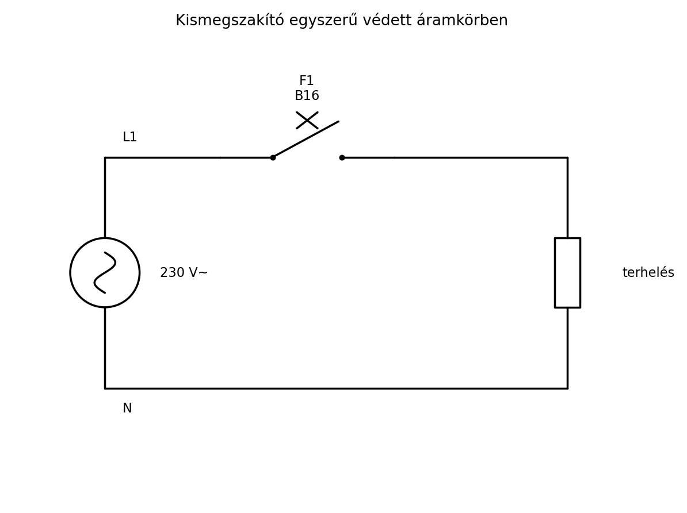

Egy lakáselosztó cseréjénél a régi olvadóbiztosítókat kismegszakítókra cserélik. A szerelőnek el kell döntenie, hogy a világítási körre miért B10-es, az aljzatkörre miért B16-os, a mosógép körére B16 vagy – ha a B bekapcsoláskor leold – C16 kerüljön, és mikor kell a motoros fogyasztónál C vagy D görbéjű készülék. A rosszul megválasztott jelleggörbe azt okozza, hogy a kismegszakító egy nagy indítási áramnál leold, vagy éppen egy kisebb zárlati áramnál csak nagyon lassan kapcsol ki. Ebben az alfejezetben a B, C, D jelleggörbéket, a termikus és mágneses kioldót, valamint a kiválasztási szempontokat tanuljuk meg.
Definíció. A kismegszakító (MCB, Miniature Circuit Breaker) olyan kapcsolókészülék, amely képes be- és kikapcsolni az üzemi áramot, és a rajta átfolyó túláram – túlterhelés vagy zárlat – hatására automatikusan megszakítja az áramkört. A névleges áramot hosszú ideig megszakítás nélkül elviseli.
A kismegszakítóban két, egymástól eltérő feladatú kioldó van:
A két kioldó helyét a készülék metszete mutatja. Az áram az 1 felső kapocstól a 2 mágneses kioldó tekercsén, a 4 álló és az 5 mozgó érintkezőn, a 14 hajlékony sodraton és a 8 bimetálon át jut a 12 alsó kapocsra. Zárlatkor a tekercs a 3 ütőszeget azonnal előrelöki: ez kioldja a 10 zárat, és szétlöki az érintkezőket. Túlterheléskor a felmelegedő bimetál hajlik el, és a kioldóhídon át ugyanazt a zárat oldja ki. Nyitáskor ív húzódik, ezt a 6 ívterelő sínek a 7 ívoltó kamrába vezetik, ahol a lemezek sok kis részívre bontják és lehűtik.
A kioldott készülék 11 kapcsolókarja 0 állásba ugrik, és a zár miatt addig nem tartható bekapcsolva, amíg a hiba fennáll. A 9 beállítócsavar gyárilag rögzített: a bimetál utánállítása vagy a készülék szétszedése tilos. A HTML-kiadásban az áram útja és a zárlati ív rétegként ki- és bekapcsolható.
A kismegszakító a fázisvezetőben van; a nullavezetőt a lakossági MCB nem szakítja meg. Az alábbi kapcsolási rajz ezt a legegyszerűbb formában mutatja.

A rajzon az F1 jelű kismegszakító a fázisvezetőben ül; a nullavezető folytonos. A hiba a fázis–nulla hurkon át zárja az áramkört, és a kismegszakítónak ezt az áramot kell megszakítania.
Definíció. A kioldási jelleggörbe azt adja meg, hogy adott áramszorzónál a kismegszakító mekkora idő alatt old ki. A görbén a termikus tartomány meredek, inverz időfüggő, a mágneses tartomány gyakorlatilag vízszintes, nagyon rövid kioldási idővel.
A lakossági kismegszakítóknál a B, C és D betű a mágneses gyorskioldó áramtartományát jelöli, azaz azt, hogy a névleges áram hányszorosánál lép működésbe a mágneses kioldó. A termikus kioldó mindhárom görbénél hasonló elven dolgozik, ezért a betű elsősorban a zárlati/gyors kioldás érzékenységét szabja.
Szabály. A B, C, D jelleggörbék mágneses gyorskioldó tartománya:
A sáv alsó határa alatt a mágneses kioldó biztosan nem old ki (a lekapcsolás időt vesz igénybe), a felső határ felett biztosan, 0,1 s-on belül kiold. A biztos gyors lekapcsolás feltételéhez (és az MSZ HD 60364-4-41 szerinti kioldási feltételhez) ezért a sáv felső határát kell használni; ez az kioldási áram:
A sáv alsó határa rendre , , illetve (ez alatt biztosan nincs mágneses kioldás: az indítási áramlökések elviselésénél ezt használjuk) (ellenőrizendő: MSZ EN 60898-1, MSZ HD 60364-4-41). A gyártói görbén a mágneses sávban a kioldási idő tipikusan 0,01–0,1 s nagyságrendű; a pontos értéket mindig a készülék adatlapjáról kell leolvasni.
A jelleggörbe leolvasását az alábbi sematikus ábra mutatja. A valós katalógusgörbék, és ez az ábra is, log–log koordináta-rendszerben jelennek meg. Egy-egy jelleg nem egyetlen vonal, hanem sáv: a szaggatott vonal a legkorábbi, a folytonos a legkésőbbi kioldás. A sáv jellemző pontjai: 1,13·In-nél a kismegszakító 1 órán belül nem old ki, 1,45·In-nél 1 órán belül kiold, 2,55·In-nél kb. 1–60 s alatt (termikus tartomány). A mágneses sáv alsó határán (B: 3, C: 5, D: 10·In) a kioldás még nem azonnali (t > 0,1 s), a felső határán (B: 5, C: 10, D: 20·In) biztosan 0,1 s-on belül megtörténik; a kettő közötti tartomány bizonytalan. A biztos gyors lekapcsoláshoz ezért a sáv felső határát kell figyelembe venni: (B), (C), (D) (ellenőrizendő: MSZ EN 60898-1, MSZ HD 60364-4-41).
Az ábrán jól látható, hogy a B sáv balra, a D sáv jobbra helyezkedik el, vagyis a D mágneses kioldója csak nagyobb áramnál szólal meg. A termikus szakasz mindháromnál hasonló alakú.
Interaktív vizsgálat. A digitális változatban a fenti ábra interaktív: kiválaszthatod a B, C vagy D jelleget, csúsztathatod az szorzót és állíthatod a névleges áramot, a program pedig kiírja, hogy az adott áram a „nem old ki”, a termikus (legkorábbi–legkésőbbi idővel), a bizonytalan mágneses vagy a biztos azonnali kioldás tartományába esik.
Alkalmazási területek. A gyakorlati szabály:
A kiválasztásnál mindig a tényleges indítási jelleget kell figyelembe venni. A görbe akkor jó aljzatkörhöz, ha a B bekapcsoláskor leold, és a hurokimpedancia a C-re is teljesíti a kioldási feltételt; egy nagyobb konyhai fogyasztó (pl. sütő, főzőlap) vagy mosógép esetében a gyártói ajánlás és a készülék indítási viselkedése dönt.
Gyakori hibahívás: a világítási kör üzemi árama alig 4 A, a B16 mégis leold, amikor felkapcsolják. A magyarázat a bekapcsolás pillanatában fellépő rövid áramcsúcs.
| Terhelés | A lökés oka | Jellemző nagyság | Időtartam | Következmény |
|---|---|---|---|---|
| motor | álló forgórész | 0,5–10 s | a görbét és a hőkioldót is terheli | |
| hagyományos vagy toroid transzformátor | mágnesezési lökés | akár | 10–50 ms | mágneses kioldás |
| LED-meghajtó, kapcsolóüzemű táp | bemeneti kondenzátor töltése | meghajtónként 20–80 A csúcs | 100–500 µs | több meghajtónál mágneses kioldás, érintkező-beégés |
Szabály. A rövid csúcsot a mágneses kioldó „látja”, mert a pillanatérték számít; az egy kapcsolóval egyszerre bekapcsolt meghajtók csúcsai összeadódnak. Ezért a gyártó megadja, hány meghajtó kerülhet legfeljebb egy kismegszakítóra (a Tanulási adattáblák kitalált adatai). A kapcsolóüzemű tápok bemeneti áramlökésének áramköri okát (a pufferkondenzátor töltését) az Egyenirányítók, szűrők, stabilizátorok, kapcsolóüzemű táp és PFC alfejezet magyarázza.
Névleges áram (). A kismegszakító tartósan elviseli ezt az áramot a környezeti hőmérsékleti határokon belül; a hőkioldó ennél kisebb áramnál nem old. A szabványos értékek pl. 6 A, 10 A, 13 A, 16 A, 20 A, 25 A, 32 A, 40 A, 50 A, 63 A; a pontos értékek a termékcsaládtól függenek.
Zárlati megszakítóképesség. Az adattáblán gyakran 6000 (6 kA) vagy 10000 (10 kA) érték szerepel. Ez azt jelenti, hogy a kismegszakító a névleges feszültségen képes biztonságosan megszakítani ekkora zárlati áramot. Ha a hálózati zárlati áram ennél nagyobb, nagyobb megszakítóképességű kismegszakítót kell választani. A kismegszakítóknál a névleges megszakítóképesség jele , az üzemi megszakítóképesség ; a konkrét értéket a gyártói adatlap szerint kell ellenőrizni (ellenőrizendő: a kiválasztott típus adatlapja).
Energiakorlátozó osztály. A kismegszakító a zárlati áramot az első félhullámban is megszakítja, mielőtt az elérné a várható csúcsértékét. Az energia-korlátozó képességet 1, 2, 3 osztályba sorolják; a 3-as a legjobb, mert a legjobban csökkenti a vezetéken átengedett értéket, így a vezeték és a készülék hőterhelését. Ezt a Vezetékvédelem, koordináció és zárlati áram alfejezetben használjuk a vezeték zárlati melegedésének ellenőrzéséhez.
Ezek az adatok a készülék homloklapján olvashatók le. Az alábbi ábrán két 1 modulos kismegszakító látható: a 4 jelzés (B16, C16) a jelleggörbét és a névleges áramot adja, az 5 keretbe írt szám a megszakítóképességet amperben (6000 = 6 kA, 10000 = 10 kA), a 8 négyzetbe írt szám az energiakorlátozó osztályt; mellettük a 7 névleges feszültség és a 6 szabványszám. Az 1 kapocsjelölés szerint a felső (1) kapocs a szokásos betáp, az alsó (2) a leágazás.
Csere vagy bővítés előtt mindhárom adatot össze kell vetni a tervvel: a két készülék névleges árama azonos, de a C16 mágneses kioldása kétszer akkora áramot igényel, ezért nagy hurokimpedanciánál nem cserélhető fel vele „ugyanolyan 16-osként”. A jelölések elhelyezése gyártónként eltér; a HTML-kiadásban az egyes jelölésekre mutatva rövid magyarázat jelenik meg.
Szabvány. A lakossági kismegszakítókra Magyarországon az MSZ EN 60898-1 vonatkozik; az ipari jellegű, nagyobb megszakítókra az MSZ EN 60947-2 alkalmazandó. A kioldási sávok, a lekapcsolási idők, a megszakítóképesség és az energia-korlátozó osztály a készülék adattábláján és a gyártói adatlapján szerepel. A szabványok időről időre módosulnak, ezért a pontos határértékeket a mindenkori érvényes kiadásból kell ellenőrizni (ellenőrizendő: MSZ EN 60898-1 aktuális kiadása).
A szabványos termikus kioldási zóna is fontos: a kismegszakító például -nél nem szabad, hogy kioldjon egy megadott időn belül, míg -nél kötelezően ki kell oldania. A pontos időket a gyártói görbe adja meg. Az MCB tehát nem -nél vált ki azonnal, hanem a névleges áramot hosszú ideig elviseli, és csak a túlterhelési sávban kezd el fokozatosan beavatkozni.
A görbeválasztást két ellentétes feltétel korlátozza: a görbe alsó határa legyen az indítási csúcs fölött (ne oldjon le feleslegesen), a felső határa pedig a zárlati áram alatt (hiba esetén biztosan oldjon). Haladj ebben a sorrendben:
| Terhelés | Szokásos görbe | Mikor váltunk | Tipikus csapda |
|---|---|---|---|
| izzólámpás világítás, fűtőbetét | B | ritkán indokolt | csere C-re „megszokásból” |
| lakás aljzatköre | B16 | ha a B bekapcsoláskor leold és engedi: C | C-re csere -mérés nélkül |
| LED-csoport, sok kapcsolóüzemű táp | B | darabszám-tábla szerint körbontás, utána C | csak az -t nézik |
| kis egyfázisú motor, kompresszor | C | ha a C leold: D vagy motorvédő | B16 az indításnál old |
| háromfázisú motor 3 kW felett | C vagy D, inkább motorvédő | nehéz indításnál | a túlterhelés-védelem elmarad |
| transzformátor, hegesztő | D | csak kis mellett | a kioldási feltétel nem teljesül |
Miért? A D görbe nem „erősebb” védelem, hanem érzéketlenebb: minél jobbra tolódik a mágneses sáv, annál kisebb hurokimpedancia kell a biztos kioldáshoz. mellett : B16 , C16 , D16 (ellenőrizendő: MSZ HD 60364-4-41).
Lakáselosztó csere során a régi, olvadóbiztosítós elosztót kismegszakítósra cserélik. A világítási áramkörre B10, az aljzatkörre B16, a mosógép/mosogatógép körre külön B16 (C16 csak akkor, ha a gyártó előírja vagy a B16 bekapcsoláskor leold, és a hurokimpedancia a C16-ra is megfelel), a főzőlapra pedig B20 vagy C20 kerül a gyártói ajánlás alapján. A szerelő a kismegszakítók beszerelése előtt megméri a hurokimpedanciát, és kiszámítja a zárlati áramot. Ha a mért , akkor
ami bőven meghaladja a B16 () és a C16 () biztos gyors kioldási áramát, tehát a zárlati lekapcsolás megfelelő. Ha azonban a mérőhely távol van, és a mérés , akkor , tehát a C16 nem kapcsol le előírt időn belül, ez nem felel meg. B16-tal () a feltétel épp csak teljesülne (), de a tartalék mindössze 2–3 %, amelyet a mérési bizonytalanság és a meleg vezeték nagyobb ellenállása felemészthet. Ezért ilyen hurokimpedanciánál a B16 sem fogadható el ellenőrzött tartalék nélkül; megbízható megoldás a vezeték keresztmetszetének növelése vagy a hurok rövidítése, esetleg más védelmi megoldás (a döntés a felülvizsgáló és a tervező dolga, ellenőrizendő: MSZ HD 60364-4-41).
A kismegszakító nem áram-védőkapcsoló (RCD); az áramütés elleni kiegészítő védelemhez külön Áram-védőkapcsoló (FI) és kiegészítő védelem szükséges. A gyakorlatban az aljzatköröknél B16 + FI-relé kombinációt építenek be.
Rossz görbe választása motoros fogyasztóhoz. Ha egy 1,5 kW-os egyfázisú motort (, indításkor ) B16-ossal védenek, a bekapcsolási áramlökés eléri a B mágneses sávját (), és a kismegszakító leold. A motorokhoz D vagy legalább C görbét kell választani, és a túlterhelés ellen külön hőkioldóval kell védeni.
Csak a névleges áramot nézik, a megszakítóképességet nem. Ha a hálózati zárlati áram meghaladja a kismegszakító értékét, a készülék nem tud biztonságosan megszakítani, és tönkremehet. A főelosztó utáni zárlati áramot ismerni kell, és a kismegszakítót ennek megfelelően kell méretezni.
A hurokimpedanciát nem mérik meg. A kismegszakító csak akkor old ki gyorsan, ha a zárlati áram eléri a mágneses kioldó határát. Ha a hurokimpedancia túl nagy, a zárlati áram kisebb, és a védelem lassú vagy nem elégséges. Ezt mindig ellenőrizni kell, különösen hosszú vezetékeknél és rossz kötéseknél.
Tilos a kismegszakítót nagyobbra cserélni a vezeték megfelelő méretezése nélkül, mert ezzel a túlterhelésvédelem hatékonysága megszűnik. Tilos a termikus- vagy mágneses kioldót kiiktatni, áthidalni, vagy a kismegszakítót dróttal „megjavítani”.
A hibakeresés a feszültségmentesítés öt biztonsági szabályával kezdődik (Villamos munkavégzés biztonsága: az öt szabály és a munkaengedély). Biztonsági korlát. A feladat tanműhelyi környezetre vagy jogosult oktató felügyeletére vonatkozik; feszültség alatti mérést csak jogosult személy végezhet. A leoldás időbeli mintája megmutatja, melyik kioldó működött.
| Leoldási minta | Kioldó | Valószínű ok | Mérés | Teendő |
|---|---|---|---|---|
| azonnal, terhelés nélkül is | mágneses | zárlat a vezetékben vagy szerelvényben | szigetelési ellenállás leválasztott fogyasztókkal, szakaszolás kötődobozonként | a hibahely javítása |
| egy készülék bekapcsolásakor azonnal | mágneses | a készülék zárlata vagy bekapcsolási lökés (motor, LED-csoport, trafó) | a készülék nélkül bekapcsolható-e; lakatfogó csúcstartással | javítás, körbontás vagy a görbe felülvizsgálata |
| percek–órák után, nagy terhelésnél | termikus | túlterhelés | áram lakatfogóval, összevetés -nel | a terhelés megosztása, nem nagyobb kismegszakító |
| kis terhelésnél is melegszik, időnként old | termikus, külső hő | laza kapocs, túlzsúfolt elosztó | hőkamera terhelés alatt; feszültségmentesen nyomaték-ellenőrzés (Elosztó szerelése, kapcsolási rajz és feliratozás) | a kötés javítása, hőelvezetés |
| nem a kismegszakító, hanem a FI old | egyik sem: differenciaáram | szigetelési hiba, N–PE összekötés | N–PE és L–PE szigetelési ellenállás | lásd Áram-védőkapcsoló (FI) és kiegészítő védelem és Hibakeresés épületvillamossági modelleken |
Gyakorlás: ennek az alfejezetnek a kidolgozott példái, gyakorlatai és megoldással ellátott feladatai az Összefoglaló feladatgyűjtemény villanyszerelő tanulóknak című kötet 18.2 szakaszában találhatók.
A kismegszakító (MCB) két kioldót egyesít: a bimetálos termikus kioldó a túlterhelés ellen véd inverz időfüggő módon, a mágneses gyorskioldó pedig a zárlat ellen kapcsol le gyorsan. A B, C, D jelleggörbe a mágneses kioldó áramtartományát adja meg: B esetén , C esetén , D esetén . A biztos gyors kioldás árama a sáv felső határa: B/C/D-nél rendre , , (a sáv alsó határa alatt, //, biztosan nincs mágneses kioldás). A védelem akkor megfelelő, ha a zárlati áram eléri legalább az értéket: . Ezt a feltételt használjuk a Vezetékvédelem, koordináció és zárlati áram, az Automatikus lekapcsolás: TN és TT, kioldási feltétel és a Kapcsolókészülékek működése, ívoltás és használati kategóriák alfejezetekben. B görbét ellenállásjellegű terhelésekhez és a szokásos lakossági aljzat- és világítási körökhöz, C görbét nagyobb bekapcsolási áramú körökhöz, D görbét nagy induló áramú fogyasztókhoz választunk – a C és a D csak akkor, ha a kioldási feltétel () is teljesül. A kiválasztásnál a névleges áram mellett a zárlati megszakítóképességet és az energiakorlátozó osztályt is ellenőrizni kell.
A fejezet a klasszikus villamosipari tananyagra és a Magyarországon elfogadott gyakorlatra épül. A kioldási sávok és a szabványhivatkozások a tárgyalt konstrukciók alapján kerültek be, de a pontos szabványkiadásokat, a gyártói adatlapokat és a szabályos kioldási időket az érvényes MSZ EN 60898-1 és a kiválasztott készülék adatlapja szerint ellenőrizni kell. A fejezetben jelzett interaktív ábra sematikus, valós méretezéshez a gyártó jelleggörbéjét kell használni. A forráskiinduló linkek (pl. a Magyar Szabványügyi Testület és a gyártók webhelyei) nem alkotnak ellenőrzött szabványhivatkozást.